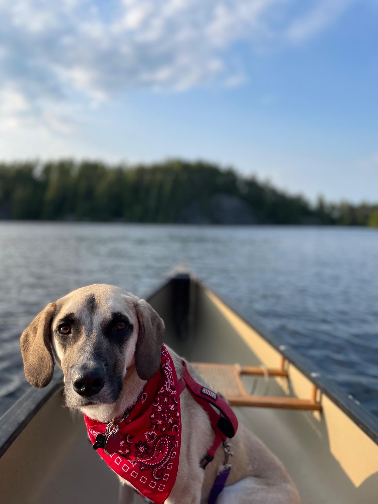

The useful details can sit quietly at the top—where the trip happened, when it happened and what we were doing—then get out of the way. The article itself should feel like a story rather than a form somebody filled out.
The part before the good part
This is where you'd write what actually happened: loading the boat, getting a later start than planned, the weather turning, a campsite that looked better from the water, or the little detail that made the trip memorable. There is no required formula.

Images can interrupt the rhythm deliberately. Some stay inside the reading column. Others break completely out of it. A gallery can appear when several photographs belong together, while the strongest image gets an entire screen.
What I'd remember
The ending doesn't need a lesson. Sometimes the useful conclusion is simply what you'd do differently next time, what gear mattered, or why you'd go back.